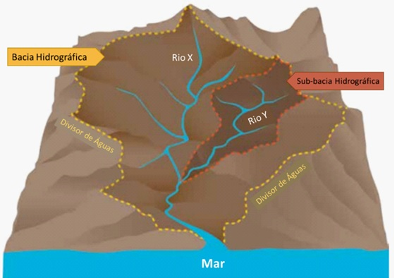
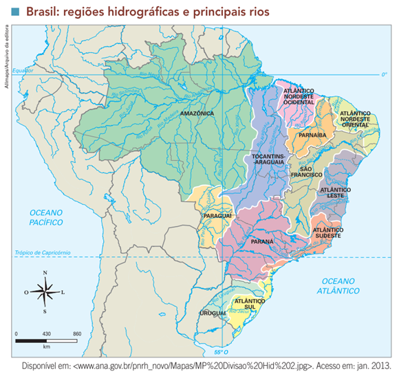
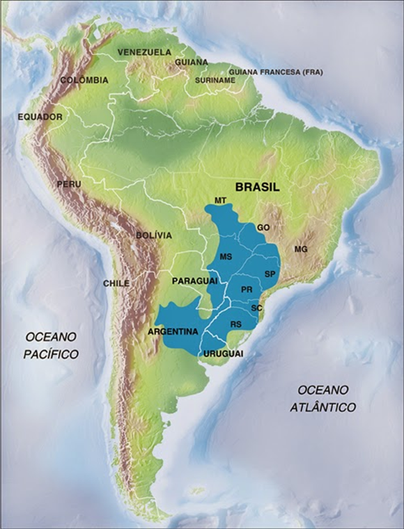

Objetivo: Definir e entender o conceito de bacia hidrográfica e comparar as características naturais e socioeconômicas das bacias brasileiras.
Digite seu nome
Introdução
Na aula passada vimos a relação entre o uso da terra e as questões socioambientais.
Na aula de hoje vamos estudar as bacias hidrográficas do Brasil. Estudar a hidrografia brasileira nos permite compreender como a água influencia a distribuição da população, as atividades econômicas e os desafios ambientais que o país enfrenta.
Questões para serem respondidas no caderno sobre o tema da aula de hoje:
1. Explique a importância das bacias hidrográficas para o Brasil, citando pelo menos três funções essenciais que elas desempenham.
2. O que são divisores de água e qual a sua importância na formação das bacias hidrográficas?
3. Compare as características do Rio Amazonas com as de outros rios brasileiros mencionados no texto, focando no regime hídrico e na importância socioeconômica.
4. Descreva as características e a importância da Bacia Amazônica para o Brasil e para o mundo.
5. Por que o Aquífero Guarani é considerado uma reserva estratégica de água doce? Quais são os desafios associados à sua exploração?
6. Qual é a diferença entre rios perenes e rios temporários? Dê exemplos desses tipos de rios no Brasil.
7. A transposição do Rio São Francisco é um dos maiores projetos de infraestrutura hídrica do Brasil. Explique seus objetivos e os desafios que essa obra enfrenta.
8. Como a Bacia Platina contribui para o desenvolvimento econômico do Brasil? Cite pelo menos duas atividades econômicas associadas a essa bacia.
9. Explique como a localização geográfica e os centros dispersores de água influenciam a rede hidrográfica do Brasil.
10. Discuta a relação entre a distribuição desigual de recursos hídricos no Brasil e os desafios de gestão enfrentados pelo país.
Bacias Hidrográficas: Definição e Importância

Uma bacia hidrográfica, também conhecida como bacia de drenagem, é uma área ou região onde as águas de chuva, montanhas, lençóis subterrâneos e rios escoam em direção a um curso d'água principal e seus afluentes. Em termos simples, é a porção de terreno onde as águas convergem para um único ponto de saída, como um rio, lago ou oceano.
A Importância das Bacias Hidrográficas As bacias hidrográficas desempenham um papel fundamental na vida humana e no meio ambiente. Elas são fontes essenciais de recursos hídricos, fornecendo água para o consumo humano, a irrigação de culturas, a produção industrial e a geração de energia. Além disso, as bacias sustentam ecossistemas diversos e complexos, abrigando uma ampla variedade de flora e fauna.
No aspecto econômico, muitas bacias hidrográficas são vitais para atividades como pesca, agricultura irrigada e transporte fluvial. No Brasil, grandes projetos de infraestrutura, como a transposição do Rio São Francisco, demonstram a importância estratégica dessas áreas para o desenvolvimento regional e nacional.
Divisores de Água e Rede Hidrográfica Os divisores de água, também conhecidos como interflúvios, são as fronteiras naturais que separam uma bacia hidrográfica de outra. Eles estão geralmente localizados em áreas elevadas, como montanhas ou colinas, e desempenham um papel crucial na determinação de para onde as águas escoam.
No Brasil, a rede hidrográfica é vasta e complexa. Ela é formada pelo conjunto de todos os cursos d'água de uma região, incluindo rios principais, afluentes e córregos. Essa rede recebe água de três centros dispersores: a Cordilheira dos Andes, o Planalto das Guianas e o Planalto Central Brasileiro, o que contribui para a diversidade e a extensão das bacias hidrográficas brasileiras.
Características dos Rios Brasileiros
Os rios brasileiros são, em sua maioria, alimentados pelas chuvas, apresentando um regime hídrico pluvial. No entanto, há exceções, como o Rio Amazonas, que possui um regime misto, sendo alimentado tanto pelas chuvas quanto pelo derretimento de neves nos Andes.
Curiosidades sobre os Rios Brasileiros
Perenidade: A maioria dos rios no Brasil é perene, ou seja, eles possuem água durante todo o ano. No entanto, em regiões semiáridas, como o Nordeste, existem rios temporários, que secam em períodos de estiagem.
Energia: Muitos rios brasileiros, especialmente aqueles localizados em planaltos, são aproveitados para a geração de energia hidrelétrica. Isso ocorre devido aos desníveis topográficos e ao elevado índice pluviométrico nessas regiões. Um exemplo icônico é o Rio Paraná, que abriga a Usina Hidrelétrica de Itaipu, uma das maiores do mundo.
Navegação: Rios de planície, como o Amazonas e o Paraguai, são amplamente utilizados para navegação, servindo como importantes vias de transporte para pessoas e mercadorias.
Fozes: O Brasil possui exemplos de diferentes tipos de fozes. O Rio Amazonas, por exemplo, possui uma foz mista, com delta e estuário. Já o Rio São Francisco tem uma foz em estuário.
Principais Bacias Hidrográficas Brasileiras

Bacia Amazônica
A Bacia Amazônica é a maior bacia hidrográfica do mundo, cobrindo uma área extensa que abrange estados como Acre, Amazonas, Pará e Rondônia. O Rio Amazonas, que nasce na Cordilheira dos Andes, no Peru, percorre 6.992 km até desaguar no Oceano Atlântico.
Importância: A Bacia Amazônica é fundamental para a manutenção da biodiversidade e para a regulação do clima global. Além disso, o rio Amazonas é uma importante via de transporte, facilitando o escoamento de produtos, como grãos e minérios, para o mercado externo. A bacia também desempenha um papel crucial no sustento das populações ribeirinhas, fornecendo água, alimentos e recursos naturais.
Bacia do Tocantins-Araguaia
A Bacia do Tocantins-Araguaia é a maior bacia hidrográfica exclusivamente brasileira. Seus principais rios, o Tocantins e o Araguaia, têm grande relevância tanto para a navegação quanto para a geração de energia. A Usina Hidrelétrica de Tucuruí, localizada no Rio Tocantins, é uma das maiores do Brasil e desempenha um papel essencial no fornecimento de energia para a região Norte.
Curiosidade: O Rio Araguaia abriga a maior ilha fluvial do mundo, a Ilha do Bananal, que é um importante santuário ecológico.
Bacia do São Francisco
O Rio São Francisco, conhecido como "Velho Chico", é o principal rio da bacia que leva seu nome. Ele nasce na Serra da Canastra, em Minas Gerais, e percorre mais de 2.800 km até desaguar no Oceano Atlântico, entre os estados de Alagoas e Sergipe.
Desafios: A transposição do Rio São Francisco é um dos maiores projetos de infraestrutura hídrica do Brasil. O objetivo é levar água para regiões do semiárido nordestino que sofrem com a seca, beneficiando mais de 12 milhões de pessoas.
Importância: O Rio São Francisco é vital para a sobrevivência das populações ribeirinhas, especialmente no semiárido, onde a água é escassa. Ele também é utilizado para a irrigação de plantações, o que impulsiona a agricultura na região.
Bacia Platina
A Bacia Platina é formada pelos rios Paraná, Paraguai e Uruguai, sendo a segunda maior bacia hidrográfica do Brasil. O Rio Paraná é o mais importante da bacia, servindo como fonte para várias usinas hidrelétricas, incluindo Itaipu.
Curiosidade: A Usina Hidrelétrica de Itaipu, localizada no Rio Paraná, é uma das maiores geradoras de energia do mundo, abastecendo grande parte do Brasil e do Paraguai.
Bacia do Parnaíba
Localizada no Nordeste do Brasil, a Bacia do Parnaíba abrange estados como Piauí e Maranhão. Embora seja menos expressiva economicamente em comparação com outras bacias, ela desempenha um papel importante na agricultura local e no abastecimento de água.
Curiosidade: A vegetação ao longo da Bacia do Parnaíba varia desde a caatinga até a floresta tropical, refletindo a diversidade de ecossistemas encontrados na região.
Aquíferos Brasileiros
Além dos rios e bacias hidrográficas, o Brasil também é rico em aquíferos, que são reservatórios subterrâneos de água. O Aquífero Guarani é o maior e mais importante deles, estendendo-se por Brasil, Paraguai, Uruguai e Argentina.
Aquífero Guarani

O Aquífero Guarani ocupa uma área de cerca de 1,2 milhões de km² e é considerado o maior reservatório de água subterrânea do mundo. No Brasil, ele está presente em estados como São Paulo, Paraná e Mato Grosso do Sul.
Importância: O Aquífero Guarani é uma reserva estratégica de água doce, essencial para o abastecimento futuro do país. Sua preservação é crucial, pois a contaminação ou a exploração excessiva poderiam comprometer a disponibilidade de água para as futuras gerações.
Curiosidade: Em algumas regiões, o Aquífero Guarani está a mais de 1.800 metros de profundidade, o que torna sua exploração um desafio técnico e econômico.
Considerações Finais
A hidrografia brasileira é um dos principais recursos naturais do país, e sua gestão sustentável é crucial para garantir o desenvolvimento econômico, social e ambiental. Compreender as características e a importância das bacias hidrográficas e aquíferos é essencial para a formação de cidadãos conscientes sobre a preservação e uso racional da água.
Curiosidade Final: O Brasil, apesar de toda sua abundância de água, enfrenta desafios relacionados à sua distribuição desigual. Enquanto a região Norte concentra a maior parte dos recursos hídricos, o Nordeste sofre com escassez e secas frequentes. Isso destaca a importância de políticas públicas eficientes para garantir o acesso à água em todo o território nacional.
Não existe pergunta boba! A Ciência é feita de perguntas!
P:Por que a Bacia Amazônica é tão importante para o Brasil e para o mundo?
R: A Bacia Amazônica é a maior bacia hidrográfica do mundo e desempenha um papel crucial na regulação do clima global, na manutenção da biodiversidade e como fonte de recursos naturais, como água e alimentos. Além disso, é uma via de transporte importante e sustenta a vida de muitas comunidades ribeirinhas.
P:O que diferencia os rios de planície dos rios de planalto no Brasil?
R: Rios de planície, como o Amazonas e o Paraguai, têm cursos mais lentos e são amplamente utilizados para a navegação. Já os rios de planalto, como o São Francisco e o Paraná, possuem desníveis acentuados, o que os torna ideais para a geração de energia hidrelétrica devido ao seu potencial energético.
P:Quais são os principais desafios enfrentados na gestão do Aquífero Guarani?
R: Os principais desafios na gestão do Aquífero Guarani incluem a exploração sustentável dos seus recursos hídricos, a prevenção da contaminação por atividades agrícolas e industriais, e a necessidade de uma cooperação internacional eficaz entre os países que compartilham o aquífero, como Brasil, Paraguai, Uruguai e Argentina.